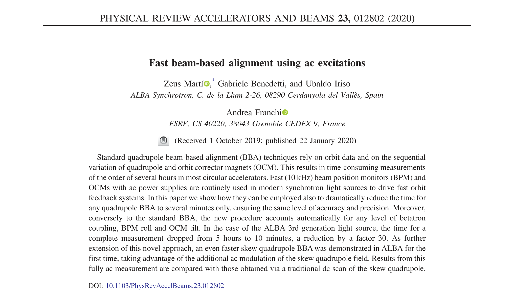
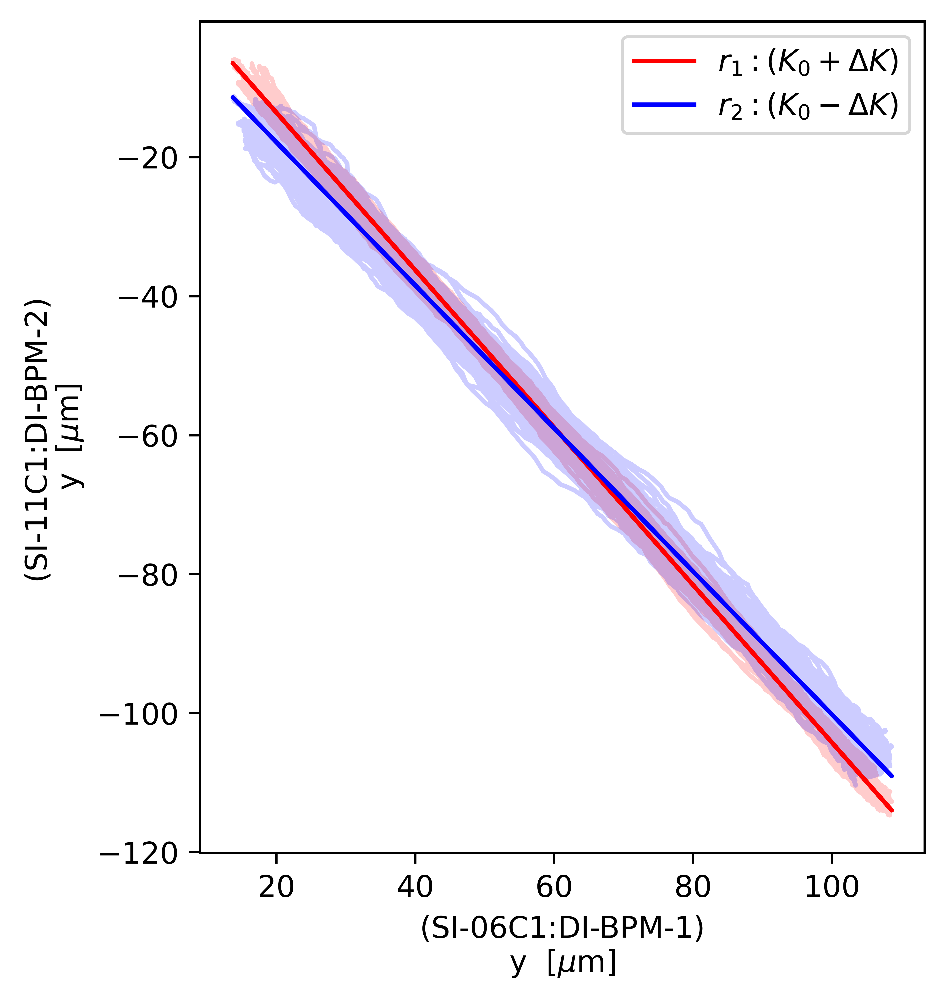

Fernando Henrique de Sá
30 de setembro de 2026

Considere um BPM $i$, seu quadrupolo associado, e uma corretora horizontal $j$
→ Há um kick $\Delta h_0$ que leva o feixe ao centro magnético do quadrupolo no plano horizontal
Nessa condição, a posição $x$ lida no BPM $i$ é seu offset horizontal:
$$x_{i, \text{offset}} = \bar{x}_i + R^{xx}_{ij}\,\Delta h_0$$
Ao invés de varreduras discretas como no BBA tradicional, excitamos a CH com frequência $f_h$:
$$\Delta h(t) = \hat h\cos(2\pi f_h t)$$
Com isso, escrevemos a órbita da seguinte forma:
$$x_i(t) = \bar{x}_i+R^{xx}_{ij}\Delta h(t)$$
Dada nossa condição que $\Delta h_0 \Leftrightarrow x_{i,\text{offset}}$, podemos reescrever a órbita:
$x_i(t) - x_{i,\text{offset}} = R^{xx}_{ij}\left[\Delta h(t) - \Delta h_0\right]$
Em qualquer outro BPM $l$, teremos a mesma condição:
$x_l(t) - x_{l,0} = R^{xx}_{lj}\left[\Delta h(t) - \Delta h_0\right]$
Assim:
$x_i(t) - x_{i,\text{offset}} = \tfrac{R^{xx}_{ij}}{R^{xx}_{lj}}(x_l(t) - x_{l,0})$
Variando a força do quadrupolo para $K_0 + \Delta K$ e $K_0 - \Delta K$, teremos:
$\left\{ \begin{aligned} r_1: x_i^+(t) - x_{i,\text{offset}} = \tfrac{R^{xx+}_{ij}}{R^{xx+}_{lj}}(x_l^+(t) - x_{l,0})\\ r_2: x_i^-(t) - x_{i,\text{offset}} = \tfrac{R^{xx-}_{ij}}{R^{xx-}_{lj}}(x_l^-(t) - x_{l,0}) \end{aligned} \right.$
→ A intersecção das retas fornece $x_{i,\text{offset}}$ e $x_{l, 0}$ que indicam, nos BPMs $i$ e $l$ quando o feixe está alinhado ao centro magnético do quadrupolo
A mesma intersecção acontece entre o BPM $i$ e todos os outros BPMs do anel, permitindo determinar o offset $x_{i, \text{offset}}$ com robustez

Considere um BPM $i$, seu quadrupolo associado, uma CH $j$ e uma CV $k$
→ Há um par de kicks $(\Delta h_0, \Delta v_0)$ que leva o feixe ao centro do quadrupolo
Nessa condição, as leituras no BPM $i$ são seus offsets:
$\left\{\begin{aligned} x_{i, \mathrm{offset}} &= \bar{x}_i + R^{xx}_{ij}\,\Delta h_0 + R^{xy}_{ik}\,\Delta v_0\\ y_{i, \mathrm{offset}} &= \bar{y}_i + R^{yx}_{ij}\,\Delta h_0 + R^{yy}_{ik}\,\Delta v_0 \end{aligned}\right.$
Excitamos a CH com frequência $f_h$ e a CV com $f_v$:
$\left\{\begin{aligned} \Delta h(t) = \hat h\cos(2\pi f_h t)\\ \Delta v(t) = \hat v\cos(2\pi f_v t) \end{aligned}\right.$
Assim, escrevemos as órbitas da seguinte forma:
$\left\{\begin{aligned} x_i(t)=\bar{x}_i+R^{xx}_{ij}\Delta h(t)+R^{xy}_{ik}\Delta v(t)\\ y_i(t)=\bar{y}_i+R^{yx}_{ij}\Delta h(t)+R^{yy}_{ik}\Delta v(t) \end{aligned}\right.$
Projetando a órbita nas frequências $f_h$ e $f_v$, obtemos:
$ \langle x_i|h \rangle = R^{xx}_{ij}\hat h, \quad \langle x_i|v \rangle = R^{xy}_{ik}\hat v, \quad \langle y_i|h \rangle = R^{yx}_{ij}\hat h, \quad \langle y_i|v \rangle = R^{yy}_{ik}\hat v $
Com isso, podemos reescrever as órbitas substituindo os $R$'s por quantidades (parcialmente) medidas:
$\left\{\begin{aligned} x_i(t)= \bar{x}_i + \langle x_i|h\rangle \tfrac{\Delta h(t)}{\hat h} + \langle x_i|v\rangle \tfrac{\Delta v(t)}{\hat v}\\ y_i(t)= \bar{y}_i + \langle y_i|h\rangle \tfrac{\Delta h(t)}{\hat h} + \langle y_i|v\rangle \tfrac{\Delta v(t)}{\hat v} \end{aligned}\right.$
Mantendo a excitação das corretoras, agora modulamos o quadrupolo:
$K = K_0 \longrightarrow K^\pm = K_0 \pm \Delta K$
Com isso, obtemos:
$\left\{\begin{aligned} x_{i}^\pm(t)= \bar{x}^\pm_i + \langle x_i^\pm|h\rangle \tfrac{\Delta h(t)}{\hat h} + \langle x_i^\pm|v\rangle \tfrac{\Delta v(t)}{\hat v}\\ y_{i}^\pm(t)= \bar{y}^\pm_i + \langle y_i^\pm|h\rangle \tfrac{\Delta h(t)}{\hat h} + \langle y_i^\pm|v\rangle \tfrac{\Delta v(t)}{\hat v} \end{aligned}\right.$
No início, definimos que o par $(\Delta h_0, \Delta v_0)$ determinava os offsets $(x_{i, \text{offset}}, y_{i, \text{offset}})$
Aplicando $\Delta h_0$ e $\Delta v_0$ no lugar das excitações $\Delta h(t)$ e $\Delta v(t)$, teremos:
$$\left\{\begin{aligned} x_{i,0}^\pm= \bar{x}^\pm_i + \langle x_i^\pm|h\rangle \tfrac{\Delta h_0}{\hat h} + \langle x_i^\pm|v\rangle \tfrac{\Delta v_0}{\hat v}\\ y_{i,0}^\pm= \bar{y}^\pm_i + \langle y_i^\pm|h\rangle \tfrac{\Delta h_0}{\hat h} + \langle y_i^\pm|v\rangle \tfrac{\Delta v_0}{\hat v} \end{aligned}\right.$$
Se o feixe está de fato centrado, então $x_{i,0}^+ = x_{i,0}^- = x_{i, \text{offset}}$, assim:
$$\left\{\begin{aligned} -(\bar{x}^+_i - \bar{x}^-_i) &= (\langle x_i^+|h\rangle - \langle x_i^-|h\rangle) \tfrac{\Delta h_0}{\hat h} + (\langle x_i^+|v\rangle - \langle x_i^-|v\rangle) \tfrac{\Delta v_0}{\hat v}\\ -(\bar{y}^+_i - \bar{y}^-_i) &= (\langle y_i^+|h\rangle - \langle y_i^-|h\rangle) \tfrac{\Delta h_0}{\hat h} + (\langle y_i^+|v\rangle - \langle y_i^-|v\rangle) \tfrac{\Delta v_0}{\hat v} \end{aligned}\right.$$
$\left\{\begin{aligned} -(\bar{x}^+_i - \bar{x}^-_i) &= (\langle x_i^+|h\rangle - \langle x_i^-|h\rangle) \tfrac{\Delta h_0}{\hat h} + (\langle x_i^+|v\rangle - \langle x_i^-|v\rangle) \tfrac{\Delta v_0}{\hat v}\\ -(\bar{y}^+_i - \bar{y}^-_i) &= (\langle y_i^+|h\rangle - \langle y_i^-|h\rangle) \tfrac{\Delta h_0}{\hat h} + (\langle y_i^+|v\rangle - \langle y_i^-|v\rangle) \tfrac{\Delta v_0}{\hat v} \end{aligned}\right.$
Reescrevendo com a notação do paper:
$ \left\{\begin{aligned} -D_x &= D_{xh}\,M_h + D_{xv}\,M_v\\ -D_y &= D_{yh}\,M_h + D_{yv}\,M_v \end{aligned}\right.\quad$ onde $\quad\left\{\begin{aligned} M_h &= \dfrac{\Delta h_0}{\hat{h}}\\ M_v &= \dfrac{\Delta v_0}{\hat{v}}\end{aligned}\right.\quad$ e $\quad \left\{\begin{aligned} D_x &= \bar{x}^+_i - \bar{x}^-_i\\ D_y &= \bar{y}^+_i - \bar{y}^-_i\\ D_{xh} &= \langle x_i^+|h\rangle - \langle x_i^-|h\rangle \\ D_{xv} &= \langle x_i^+|v\rangle - \langle x_i^-|v\rangle \\ D_{yh} &= \langle y_i^+|h\rangle - \langle y_i^-|h\rangle \\ D_{yv} &= \langle y_i^+|v\rangle - \langle y_i^-|v\rangle \\ \end{aligned}\right. $
Matricialmente:
$\left\{\begin{aligned} -D_x &= D_{xh}\,M_h + D_{xv}\,M_v\\ -D_y &= D_{yh}\,M_h + D_{yv}\,M_v \end{aligned}\right. \quad\Rightarrow\quad \left[\begin{matrix} M_h \\ M_v \end{matrix}\right] = - \mathfrak{D}^{-1}\left[\begin{matrix} D_x \\ D_y \end{matrix}\right] \quad$ onde $\quad \mathfrak{D} = \left[\begin{matrix} D_{xh} & D_{xv} \\ D_{yh} & D_{yv} \end{matrix}\right] $
Resolvendo para $M_h$ e $M_v$ obtemos:
$ \left[\begin{matrix} M_h \\ M_v \end{matrix}\right] = - \dfrac{1}{\det{\mathfrak{D}}} \left[\begin{matrix} D_{yv} & -D_{xv} \\ -D_{yh} & D_{xh} \end{matrix}\right] \left[\begin{matrix} D_x \\ D_y \end{matrix}\right] \Rightarrow \left\{ \begin{aligned} M_h = \dfrac{D_{xv}D_{y} - D_{yv}D_{x}}{D_{xh}D_{yv} - D_{yh}D_{xv}}\\ M_v = \dfrac{D_{yh}D_{x} - D_{xh}D_{y}}{D_{xh}D_{yv} - D_{yh}D_{xv}} \end{aligned} \right. $
$\left\{ \begin{aligned} M_h = \dfrac{D_{xv}D_{y} - D_{yv}D_{x}}{D_{xh}D_{yv} - D_{yh}D_{xv}} = \dfrac{Y_{h, l}}{X_{l}}\\ M_v = \dfrac{D_{yh}D_{x} - D_{xh}D_{y}}{D_{xh}D_{yv} - D_{yh}D_{xv}} = \dfrac{Y_{v, l}}{X_{l}}\end{aligned} \right. $
Por fim, calculamos o par $(M_h, M_v)$ com os dados dos 160 BPMs:
$\left\{ \begin{aligned} \vec{Y}_h = M_h\vec{X}\\ \vec{Y}_v = M_v\vec{X} \end{aligned} \right. $
Em posse de $M_h$ e $M_v$, retornamos ao BPM $i$, e determinamos os offsets:
$\left\{\begin{aligned} x_{i, \mathrm{offset}} &= \bar{x}^\pm_i + \langle x_i^\pm|h\rangle M_h + \langle x_i^\pm|v\rangle M_v\\ y_{i, \mathrm{offset}} &= \bar{y}^\pm_i + \langle y_i^\pm|h\rangle M_h + \langle y_i^\pm|v\rangle M_v \end{aligned}\right.$
Com o mesmo BPM $i$, corretora CH $j$ e CV $k$, agora faremos modulação AC do quadrupolo:
$K = K_0 \longrightarrow K(t) = K_0 + \Delta K\cos(2\pi f_q t)$
Se o feixe não está alinhado ao centro magnético do quadrupolo, surge uma distorção na frequência $f_q$:
$d_{x,i}(t)=\hat d_{x,i}\cos(2\pi f_qt)$
E agora, a ORM também varia:
$R_{ij}(t) = R_{ij} + \rho_{ij}(t)$
Com isso, as órbitas serão:
$\left\{\begin{aligned} x_{i}(t) &= \bar{x}_i + d_{x,i}(t) + [R^{xx}_{ij}+\rho^{xx}_{ij}(t)]\Delta h(t) + [R^{xy}_{ik}+\rho^{xy}_{ik}(t)]\Delta v(t) \\ y_{i}(t) &= \bar{y}_i + d_{y,i}(t) + [R^{yx}_{ij}+\rho^{yx}_{ij}(t)]\Delta h(t) + [R^{yy}_{ik}+\rho^{yy}_{ik}(t)]\Delta v(t) \end{aligned}\right.$
Partindo da mesma condição $(\Delta h_0, \Delta v_0) \Leftrightarrow (x_{i, \text{offset}}, y_{i, \text{offset}})$, quando o feixe está alinhado ao centro magnético do quadrupolo, a amplitude da componente em $f_q$ deve ser nula:
$$ \left\{\begin{aligned} \hat{x}_{i}^{(q)} &= \hat{d}_{x,i} + \hat{\rho}^{xx}_{ij}\Delta h_0 + \hat{\rho}^{xy}_{ik}\Delta v_0 = 0 \\ \hat{y}_{i}^{(q)} &= \hat{d}_{y,i} + \hat{\rho}^{yx}_{ij}\Delta h_0 + \hat{\rho}^{yy}_{ik}\Delta v_0 = 0 \end{aligned}\right. $$
E os offsets do BPM $i$ são obtidos como anteriormente:
$$\left\{\begin{aligned} x_{i, \mathrm{offset}} &= \bar{x}_i + \langle x_i|h\rangle M_h + \langle x_i|v\rangle M_v\\ y_{i, \mathrm{offset}} &= \bar{y}_i + \langle y_i|h\rangle M_h + \langle y_i|v\rangle M_v \end{aligned}\right.$$
Com a excitação AC do quadrupolo acontecendo junto das corretoras, as projeções são ligeiramente diferentes:
$$ \langle x_i|h \rangle = R^{xx}_{ij}\hat h, \qquad \langle x_i|v \rangle = R^{xy}_{ik}\hat v, \qquad \langle y_i|h \rangle = R^{yx}_{ij}\hat h, \qquad \langle y_i|v \rangle = R^{yy}_{ik}\hat v,$$
$$ \langle x_i|q \rangle = \hat{d}_{x,i}, \qquad \langle y_i|q \rangle = \hat{d}_{y,i},$$
$$ \langle x_i|h+q \rangle = \langle x_i|h-q \rangle = \tfrac{1}{2}\hat{\rho}^{xx}_{ij}\hat h, \qquad \langle x_i|v+q \rangle = \langle x_i|v-q \rangle = \tfrac{1}{2}\hat{\rho}^{xy}_{ik}\hat v,$$
$$ \langle y_i|h+q \rangle = \langle y_i|h-q \rangle = \tfrac{1}{2}\hat{\rho}^{yx}_{ij}\hat h, \qquad \langle y_i|v+q \rangle = \langle y_i|v-q \rangle = \tfrac{1}{2}\hat{\rho}^{yy}_{ik}\hat v.$$
$ \left\{\begin{aligned} \hat{d}_{x,i} + \hat{\rho}^{xx}_{ij}\Delta h_0 + \hat{\rho}^{xy}_{ik}\Delta v_0 = 0\\ \hat{d}_{y,i} + \hat{\rho}^{yx}_{ij}\Delta h_0 + \hat{\rho}^{yy}_{ik}\Delta v_0 = 0\end{aligned}\right. $
Retornando à condição de alinhamento, e reescrevendo com a notação do paper:
$ \left\{\begin{aligned} D_x + D_{xh}\,M_h + D_{xv}\,M_v = 0 \\ D_y + D_{yh}\,M_h + D_{yv}\,M_v = 0 \end{aligned}\right.\qquad$ onde $ \qquad\left\{\begin{aligned} D_x &= \langle x_i|q \rangle\\ D_y &= \langle y_i|q \rangle\\ D_{xh} &= \langle x_i|h+q\rangle + \langle x_i|h-q\rangle \\ D_{xv} &= \langle x_i|v+q\rangle + \langle x_i|v-q\rangle \\ D_{yh} &= \langle y_i|h+q\rangle + \langle y_i|h-q\rangle \\ D_{yv} &= \langle y_i|v+q\rangle + \langle y_i|v-q\rangle \\ \end{aligned}\right. $
Seguindo a mesma álgebra, serão obtidos $M_h$ e $M_v$:
$\left\{ \begin{aligned} M_h = \dfrac{D_{xv}D_{y} - D_{yv}D_{x}}{D_{xh}D_{yv} - D_{yh}D_{xv}}\\ M_v = \dfrac{D_{yh}D_{x} - D_{xh}D_{y}}{D_{xh}D_{yv} - D_{yh}D_{xv}} \end{aligned} \right. \Rightarrow \left\{ \begin{aligned} \vec{Y}_h = M_h\vec{X}\\ \vec{Y}_v = M_v\vec{X} \end{aligned} \right. $
E, retornando ao BPM $i$, calculamos os offsets:
$\left\{\begin{aligned} x_{i, \mathrm{offset}} &= \bar{x}_i + \langle x_i|h\rangle M_h + \langle x_i|v\rangle M_v\\ y_{i, \mathrm{offset}} &= \bar{y}_i + \langle y_i|h\rangle M_h + \langle y_i|v\rangle M_v \end{aligned}\right.$